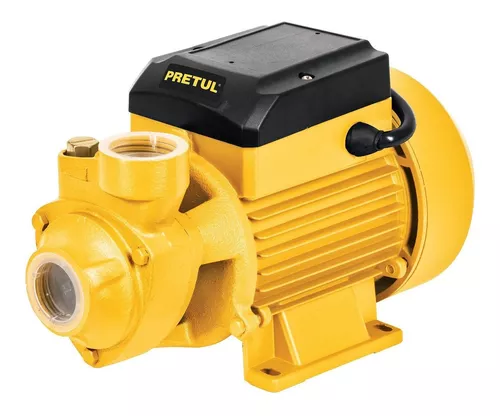
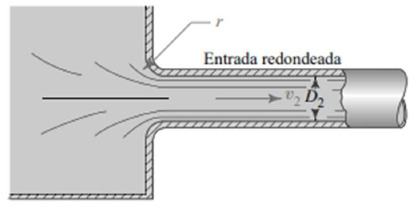
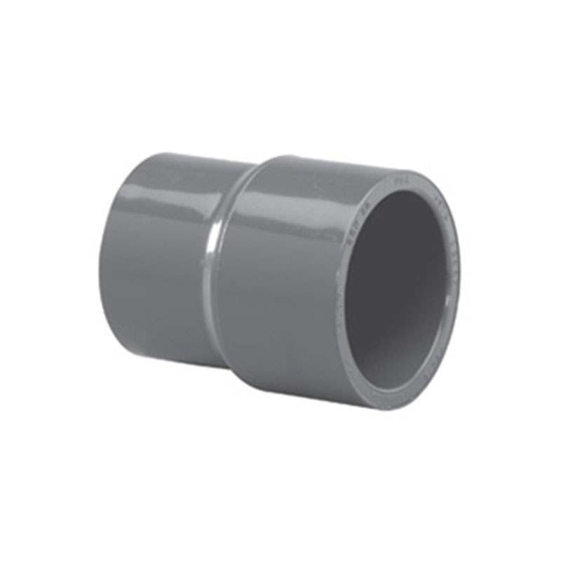
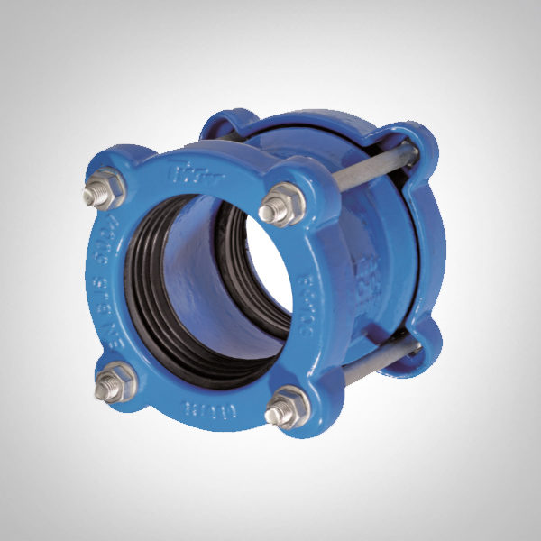
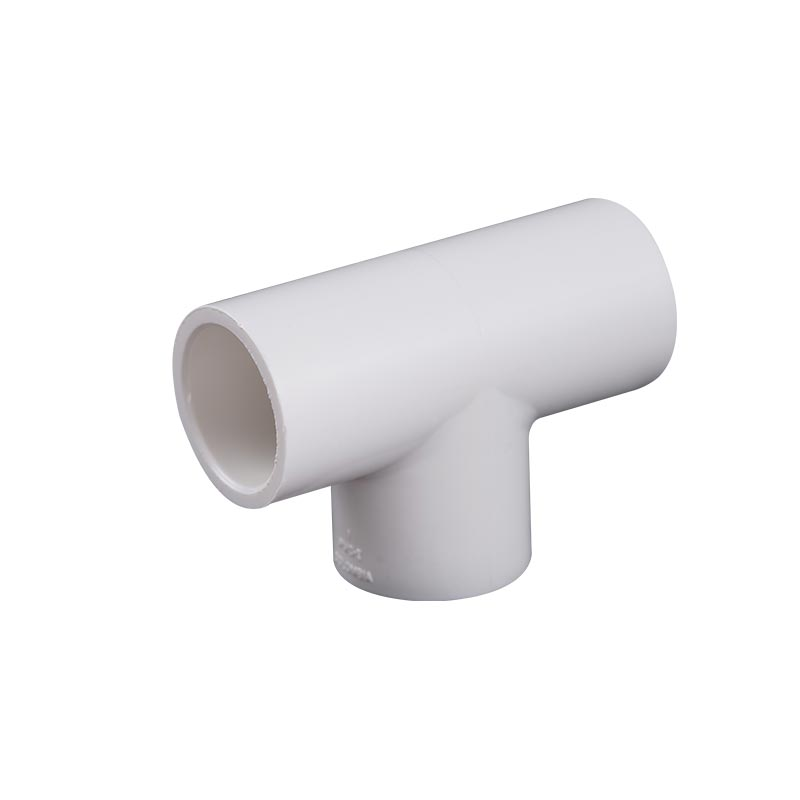
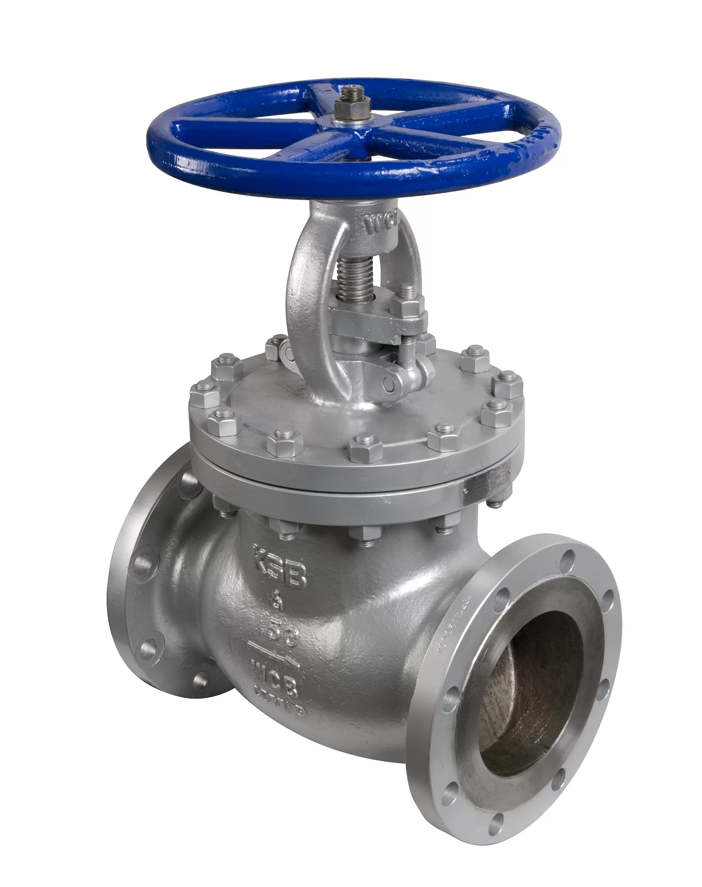

Los codos de 90° en sistemas de tuberías redirigen el
flujo de agua, permitiendo cambios de dirección en
ángulos rectos sin interrupciones significativas.
Usos
Los codos en sistemas de tuberías se utilizan para
cambiar la dirección del flujo de agua, adaptarse a
la geometría del espacio, evitar obstáculos, y conectar
tramos de tubería en ángulos específicos, mejorando
la eficiencia y flexibilidad del sistema.
Materiales
acero inoxidable, cobre, PVC, hierro fundido
y otros metales y plásticos resistentes.
Seleccion:
La selección de codos en un sistema de tuberías
depende de factores como el material de las tuberías,
la presión del agua, el diámetro de las tuberías,
el ángulo requerido, y las condiciones ambientales.
Se busca minimizar la resistencia al flujo y
asegurar la compatibilidad con otros componentes
del sistema.
Descripcion
Los tubos transportan agua y otros fluidos en sistemas
cerrados, conectando diversos componentes para asegurar
un flujo continuo y eficiente.
Usos
Los tubos se utilizan para distribuir agua desde fuentes hasta puntos de consumo, conectar equipos como bombas y válvulas, y asegurar el flujo continuo en sistemas de suministro y drenaje.
Materiales
Se fabrican en PVC, cobre, acero galvanizado, hierro dúctil y polietileno.
Seleccion:
La selección de tubos depende del tipo de agua, presión, temperatura, diámetro requerido, compatibilidad con otros componentes, y condiciones ambientales del entorno de instalación.

Descripcion
Las bombas mueven el agua a través del sistema de tuberías, incrementando la presión y asegurando un flujo constante y controlado.
Usos
Las bombas se utilizan para impulsar agua en sistemas de suministro, aumentar la presión en redes de distribución, drenar áreas inundadas, y mover agua entre tanques y otros componentes del sistema.
Materiales
se compone de varios elmentos, y tiene una recubierta metalica.
Selección
La selección de bombas depende del caudal requerido, la altura de elevación, la presión deseada, la compatibilidad con el tipo de agua, la eficiencia energética, y las condiciones de operación específicas del sistema.
Descripcion
Los tanques de almacenamiento retienen agua, proporcionando reserva y regulación en sistemas de suministro y distribución para garantizar un flujo continuo.
Usos
Los tanques de almacenamiento se utilizan para almacenar agua potable, regular la presión en sistemas de distribución, proporcionar reserva para emergencias, y equilibrar variaciones en la demanda de agua en diferentes momentos del día.
Materiales
Pueden fabricarse en concreto en el sitio, o pueden ser prefabricado, existen tanques de polímero o de metal.
Selección
La selección de tanques depende de la capacidad requerida, la ubicación de instalación, el tipo de agua a almacenar, las condiciones ambientales, la durabilidad del material, y las normativas de salud y seguridad aplicables.

Descripcion
Las salidas de tanque son conexiones que permiten la salida controlada de agua desde el tanque de almacenamiento, regulando su flujo y distribución.
Usos
Las salidas de tanque se emplean para extraer agua de manera controlada del tanque, facilitando su distribución hacia el sistema de tuberías para su uso o consumo.
Materiales
Suelen estar fabricadas en PVC, acero inoxidable o bronce, seleccionados según las necesidades específicas del sistema y el tipo de agua.
Selección:
La selección de salidas de tanque se basa en el caudal requerido, la presión del sistema, la ubicación del punto de salida, la durabilidad del material y la compatibilidad con otros componentes del sistema de distribución de agua.

Descripcion
Las reducciones son accesorios que permiten el cambio gradual en el diámetro de una tubería, facilitando la adaptación entre secciones de diferente tamaño.
Usos
Se emplean para conectar tuberías de diferentes diámetros, facilitando la transición suave del flujo de agua y minimizando la pérdida de presión.
Materiales
Se fabrican comúnmente en PVC, acero galvanizado, hierro dúctil y polietileno, seleccionados según la aplicación y las condiciones de operación.
Selección:
La selección de reducciones se basa en los diámetros de las tuberías a conectar, el tipo de material, la presión y el caudal del agua, garantizando una transición eficiente y sin obstrucciones en el sistema de tuberías.

Descripcion
Las uniones son dispositivos que conectan dos tramos de tubería, permitiendo desmontaje para mantenimiento o reparaciones.
Usos
Se emplean para unir tramos de tubería de manera segura y hermética, facilitando la instalación, reparación y mantenimiento del sistema.
Materiales
Generalmente fabricadas en PVC, acero inoxidable o bronce, seleccionados según las necesidades específicas del sistema y el tipo de tubería.
Selección:
La selección de uniones se basa en el tipo y diámetro de las tuberías a conectar, la presión y el tipo de fluido transportado, garantizando una conexión duradera y resistente a fugas.

Descripcion
El accesorio T es una pieza de conexión en forma de "T" que se utiliza en sistemas de tuberías para dividir o combinar el flujo de agua en dos direcciones perpendiculares.
Usos
Se emplea para ramificar el flujo de agua en una tubería principal, permitiendo la conexión de dos tramos adicionales de tubería en ángulos rectos.
Materiales
Fabricado comúnmente en PVC, acero galvanizado, bronce o hierro dúctil, dependiendo de los requisitos de resistencia y compatibilidad del sistema.
Selección:
La selección del accesorio T se basa en el diámetro de la tubería, la presión del sistema, el material de la tubería y las necesidades específicas de la distribución de agua en el sistema de tuberías.

Descripcion
Las válvulas son dispositivos de control que regulan el flujo de agua en sistemas de tuberías, permitiendo abrir, cerrar o modular el paso del líquido.
Usos
Se utilizan para controlar el caudal de agua, regular la presión, detener o permitir el flujo en diferentes secciones del sistema de tuberías.
Materiales
Fabricadas en una variedad de materiales, como bronce, acero inoxidable, PVC y hierro fundido, seleccionados según la aplicación y las condiciones de operación.
Selección:
La selección de válvulas se basa en el tipo de fluido, la presión y temperatura de trabajo, el tamaño de la tubería, el tipo de accionamiento (manual o automático), y las características específicas del sistema de tuberías y sus requerimientos de control de flujo.
Codos
Los codos de 90° en sistemas de tuberías redirigen el flujo de agua, permitiendo cambios de dirección en ángulos rectos sin interrupciones significativas.
Los tanques de almacenamiento retienen agua, proporcionando reserva y regulación en sistemas de suministro y distribución para garantizar un flujo continuo.
Las reducciones son accesorios que permiten el cambio gradual en el diámetro de una tubería, facilitando la adaptación entre secciones de diferente tamaño.
Las válvulas son dispositivos de control que regulan el flujo de agua en sistemas de tuberías, permitiendo abrir, cerrar o modular el paso del líquido.